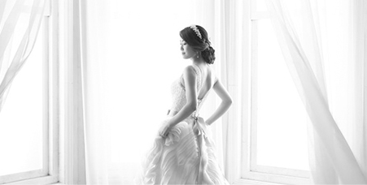
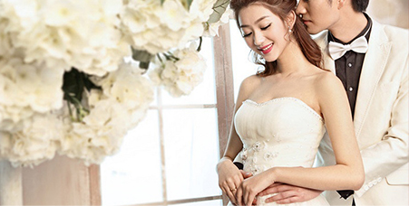

首页： 公司简介
首页
- 公司简介
公司简介/COMPANY PROFILE
金夫人婚纱摄影是在国家改革开放政策的指引下成长起来的重庆首家外商独资企业。1989年，金夫人以6.5万美元的注册资金，迈出艰苦创业的第一步。最初金夫人的店面是在解放碑邹容路重庆剧场的地下室，面积只有380平方米，后期制作也同在一间地下室，条件非常艰苦，只有19个人,一个人干几个人的事,金夫人集团创始人周生俊先生事事亲历亲为，用实际行动感染着每一位员工的工作激情。
北京金夫人婚纱影楼一直坚持走精品化道路，努力发展品牌文化，始终贯彻我们的十大优势：荣获中国商业信用企业、中国摄影名店、中国婚纱摄影服务满意十佳诚信单位、群英会婚纱行业杰出成就奖、精神文明优秀团体、消费者信得过企业、群英会婚纱行业特殊贡献奖等殊荣。不断开阔婚纱摄影新风尚，引领风骚，独树风格！
1989年，金夫人以6.5万美元的注册资金，迈出艰苦创业的第一步。最初金夫人的店面是在解放碑邹容路重庆剧场的地下室，面积只有380平方米，后期制作也同在一间地下室，条件非常艰苦，只有19个人,一个人干几个人的事,金夫人集团创始人周生俊先生事事亲历亲为，用实际行动感染着每一位员工的工作激情。
我们的十大优势：荣获中国商业信用企业、中国摄影名店、中国婚纱摄影服务满意十佳诚信单位、群英会婚纱行业杰出成就奖、精神文明优秀团体、消费者信得过企业、群英会婚纱行业特殊贡献奖等殊荣。不断开阔婚纱摄影新风尚，引领风骚，独树风格！
最初金夫人的店面是在解放碑邹容路重庆剧场的地下室，面积只有380平方米，后期制作也同在一间地下室，条件非常艰苦，只有19个人,一个人干几个人的事,金夫人集团创始人周生俊先生事事亲历亲为，用实际行动感染着每一位员工的工作激情。

